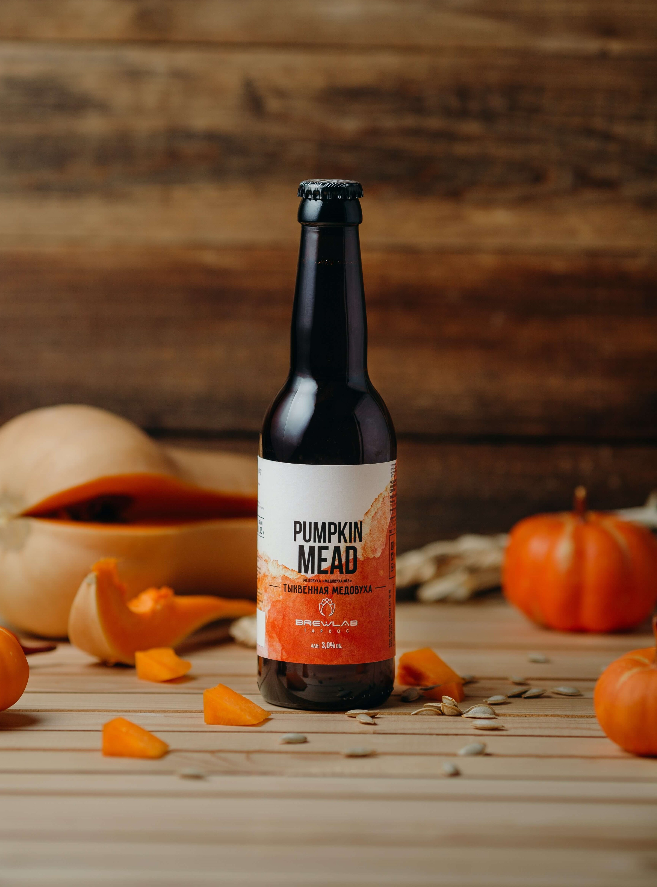
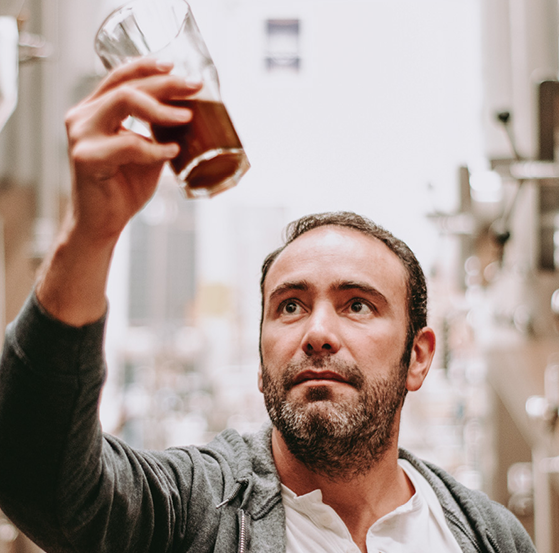

ORIGEN
Nuestra cervecería artesanal nació en el corazón de Guadalajara, Jalisco, impulsada por la visión y pasión de Jesús Briseño Gómez España, cuando tenía tan solo 23 años.
Desde sus inicios, buscó romper con los paradigmas cerveceros tradicionales y ofrecer algo único a los amantes de la cerveza.
La historia comienza con la determinación de Jesús por crear cervezas de alta calidad a precios accesibles, lo que le llevó a estudiar el arte cervecero con fervor.
Durante años, trabajó incansablemente, perfeccionando sus habilidades y experimentando con diversas maltas, lúpulos y levaduras
.jpg)
2004
.jpg)
2007

2015

2019
2004
La cervecería se fundó en un modesto local en el corazón de la ciudad, donde Jesús y su equipo vendieron
el primer barril de cerveza con esmero y cuidado artesanal. Fue así como se ganaron la confianza y lealtad de sus primeros
clientes, quienes apreciaron la calidad y sabor distintivo de sus creaciones
2007
Fuimos la primera cerveza artesanal en venderse en un supermercado mexicano, dentro de un HEB en Monterrey.
Poquito a poquito dimos origen a la categoría de cerveza artesanal en autoservicios.
2015
Con Pumpking mead ganamos la medalla de oro en el World Beer Cup, convirtiéndonos en la primera cerveza artesanal mexicana
en ganar oro en este “mundial de las cervezas”.
2020
Lanzamos Minerva Lager Light, la artesanal con menos calorías de toda la categoría de cerveza, con todo el gran sabor y
filosofía de una artesanal.